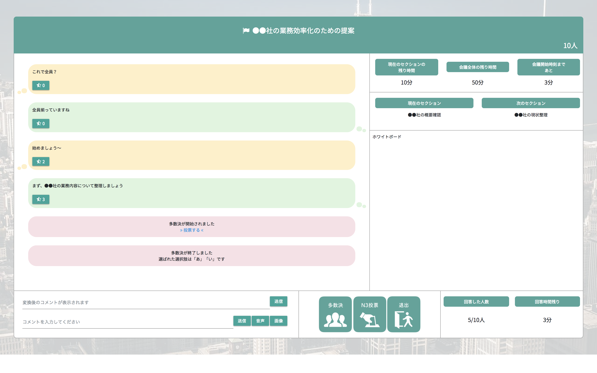

期間 | 2ヶ月 人数 | 5人 言語 | JAVA，MongoDB，JavaScript，HTML
会議の活性化・効率化を目的としたシステム．匿名制により，普段は上下関係などを気にして発言できていない場面でも意見を述べやすくなると考えた． さらに，このシステムには様々な機能が設けられている．例えば，より匿名性を強化するための『標準語化』機能，効率良く会議を進めるための『多数決』『N3投票』機能などがある． 私は主にフロントエンドを担当した．一番注力したポイントは，これらの豊富な機能を一画面にまとめる上で，ユーザに煩わしいと感じさせないためのデザインである． 利用実験を行いながら開発した結果，評価会ではUIデザインに高評価を受け優勝した．